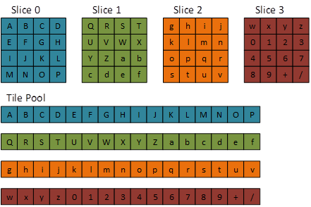

Volume (3D) textures can be used as tiled resources, noting that tile resolution is three-dimensional.
Tiled resources decouple a D3D Resource object from its backing memory (resources in the past had a 1:1 relationship with their backing memory). This allows for a variety of interesting scenarios such as streaming in texture data and reusing or reducing memory usage
2D texture tiled resources are supported in D3D11.2. D3D12 and D3D11.3 add support for 3D tiled textures.
The typical resource dimensions used in tiling are 4 x 4 tiles for 2D textures, and 4 x 4 x 4 tiles for 3D textures.
| Bits/pixel (1 sample/pixel) | Tile dimensions (pixels, w x h x d) |
|---|---|
| 8 | 64x32x32 |
| 16 | 32x32x32 |
| 32 | 32x32x16 |
| 64 | 32x16x16 |
| 128 | 16x16x16 |
| BC 1,4 | 128x64x16 |
| BC 2,3,5,6,7 | 64x64x16 |
Â
Note the following formats are not supported with tiled resources: 96bpp formats, video formats, R1_UNORM, R8G8_B8G8_UNORM, R8R8_G8B8_UNORM.
In the diagrams below dark gray represents NULL tiles.

The following code sets up a 3D tiled resource at the most detailed mip.
D3D11_TILED_RESOURCE_COORDINATE trCoord;
trCoord.X = 1;
trCoord.Y = 0;
trCoord.Z = 0;
trCoord.Subresource = 0;
D3D11_TILE_REGION_SIZE trSize;
trSize.bUseBox = false;
trSize.NumTiles = 63;
The following code sets up a 3D tiled resource, and the second most detailed mip:
D3D11_TILED_RESOURCE_COORDINATE trCoord;
trCoord.X = 1;
trCoord.Y = 0;
trCoord.Z = 0;
trCoord.Subresource = 1;
D3D11_TILE_REGION_SIZE trSize;
trSize.bUseBox = false;
trSize.NumTiles = 6;

The following code sets up a Single Tile resource:
D3D11_TILED_RESOURCE_COORDINATE trCoord;
trCoord.X = 1;
trCoord.Y = 1;
trCoord.Z = 1;
trCoord.Subresource = 0;
D3D11_TILE_REGION_SIZE trSize;
trSize.bUseBox = true;
trSize.NumTiles = 27;
trSize.Width = 3;
trSize.Height = 3;
trSize.Depth = 3;

The following code sets up a Uniform Box tiled resource (note the statement trSize.bUseBox = true;) :
D3D11_TILED_RESOURCE_COORDINATE trCoord;
trCoord.X = 0;
trCoord.Y = 1;
trCoord.Z = 0;
trCoord.Subresource = 0;
D3D11_TILE_REGION_SIZE trSize;
trSize.bUseBox = true;
trSize.NumTiles = 27;
trSize.Width = 3;
trSize.Height = 3;
trSize.Depth = 3;

The same API calls are used for both 2D and 3D tiled resources:
Enums
Structures
Methods
Â
Â